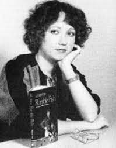

Hinton was just 15 years old when she started writing The Outsiders and did most of the work at 16 when she was a junior in high school. She was 18-years-old when the book was published in 1967.
Hinton used the initials S. E. when publishing her books so that when male book reviewers would see her book, they wouldn't dismiss it just because the author was female.
